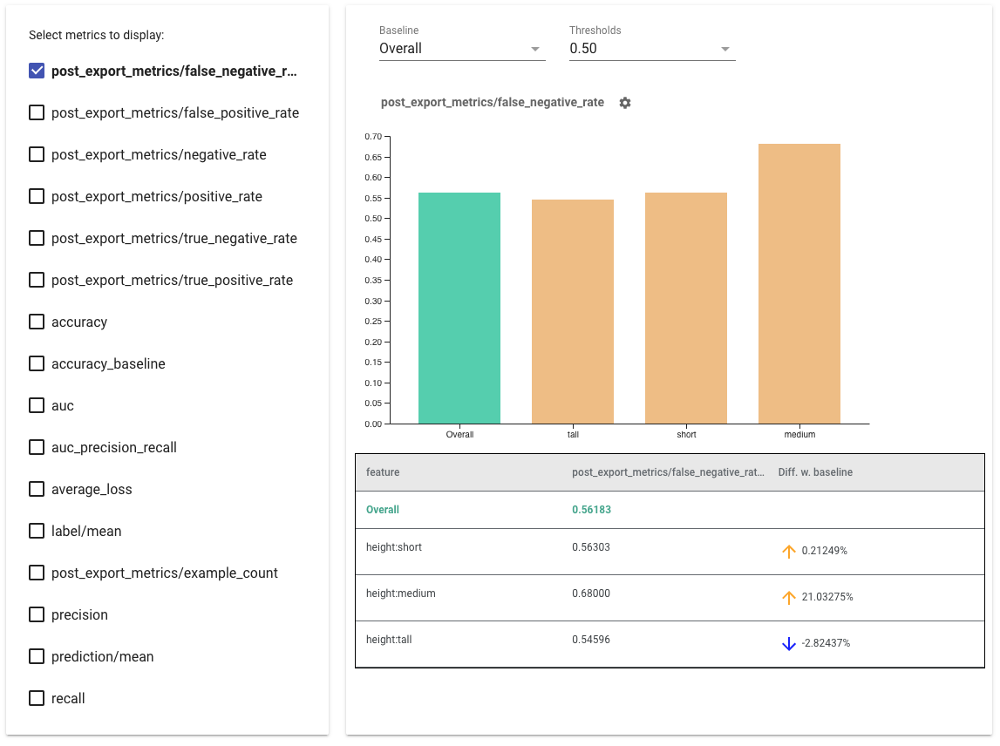
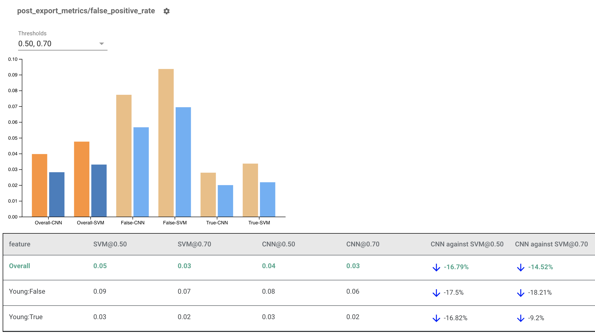

Fairness Indicators¶
Fairness Indicators is designed to support teams in evaluating and improving models for fairness concerns in partnership with the broader Tensorflow toolkit. The tool is currently actively used internally by many of our products, and is now available in BETA to try for your own use cases.

What is Fairness Indicators?¶
Fairness Indicators is a library that enables easy computation of commonly-identified fairness metrics for binary and multiclass classifiers. Many existing tools for evaluating fairness concerns don’t work well on large scale datasets and models. At Google, it is important for us to have tools that can work on billion-user systems. Fairness Indicators will allow you to evaluate across any size of use case.
In particular, Fairness Indicators includes the ability to:
- Evaluate the distribution of datasets
- Evaluate model performance, sliced across defined groups of users
- Feel confident about your results with confidence intervals and evals at multiple thresholds
- Dive deep into individual slices to explore root causes and opportunities for improvement
The pip package download includes:
- Tensorflow Data Validation (TFDV)
- Tensorflow Model Analysis (TFMA)
- Fairness Indicators
- The What-If Tool (WIT)
Using Fairness Indicators with Tensorflow Models¶
Data¶
To run Fairness Indicators with TFMA, make sure the evaluation dataset is labelled for the features you would like to slice by. If you don't have the exact slice features for your fairness concerns, you may explore trying to find an evaluation set that does, or considering proxy features within your feature set that may highlight outcome disparities. For additional guidance, see here.
Configuring Slices¶
Next, define the slices you would like to evaluate on:
If you want to evaluate intersectional slices (for example, both fur color and height), you can set the following:
Compute Fairness Metrics¶
Add a Fairness Indicators callback to the metrics_callback list. In the
callback, you can define a list of thresholds that the model will be evaluated
at.
from tensorflow_model_analysis.addons.fairness.post_export_metrics import fairness_indicators
# Build the fairness metrics. Besides the thresholds, you also can config the example_weight_key, labels_key here. For more details, please check the api.
metrics_callbacks = \
[tfma.post_export_metrics.fairness_indicators(thresholds=[0.1, 0.3,
0.5, 0.7, 0.9])]
eval_shared_model = tfma.default_eval_shared_model(
eval_saved_model_path=tfma_export_dir,
add_metrics_callbacks=metrics_callbacks)
Before running the config, determine whether or not you want to enable computation of confidence intervals. Confidence intervals are computed using Poisson bootstrapping and require recomputation over 20 samples.
Run the TFMA evaluation pipeline:
validate_dataset = tf.data.TFRecordDataset(filenames=[validate_tf_file])
# Run the fairness evaluation.
with beam.Pipeline() as pipeline:
_ = (
pipeline
| beam.Create([v.numpy() for v in validate_dataset])
| 'ExtractEvaluateAndWriteResults' >>
tfma.ExtractEvaluateAndWriteResults(
eval_shared_model=eval_shared_model,
slice_spec=slice_spec,
compute_confidence_intervals=compute_confidence_intervals,
output_path=tfma_eval_result_path)
)
eval_result = tfma.load_eval_result(output_path=tfma_eval_result_path)
Render Fairness Indicators¶
from tensorflow_model_analysis.addons.fairness.view import widget_view
widget_view.render_fairness_indicator(eval_result=eval_result)
Tips for using Fairness Indicators:
- Select metrics to display by checking the boxes on the left hand side. Individual graphs for each of the metrics will appear in the widget, in order.
- Change the baseline slice, the first bar on the graph, using the dropdown selector. Deltas will be calculated with this baseline value.
- Select thresholds using the dropdown selector. You can view multiple thresholds on the same graph. Selected thresholds will be bolded, and you can click a bolded threshold to un-select it.
- Hover over a bar to see metrics for that slice.
- Identify disparities with the baseline using the "Diff w. baseline" column, which identifies the percentage difference between the current slice and the baseline.
- Explore the data points of a slice in depth using the What-If Tool. See here for an example.
Rendering Fairness Indicators for Multiple Models¶
Fairness Indicators can also be used to compare models. Instead of passing in a single eval_result, pass in a multi_eval_results object, which is a dictionary mapping two model names to eval_result objects.
from tensorflow_model_analysis.addons.fairness.view import widget_view
eval_result1 = tfma.load_eval_result(...)
eval_result2 = tfma.load_eval_result(...)
multi_eval_results = {"MyFirstModel": eval_result1, "MySecondModel": eval_result2}
widget_view.render_fairness_indicator(multi_eval_results=multi_eval_results)

Model comparison can be used alongside threshold comparison. For example, you can compare two models at two sets of thresholds to find the optimal combination for your fairness metrics.
Using Fairness Indicators with non-TensorFlow Models¶
To better support clients that have different models and workflows, we have developed an evaluation library which is agnostic to the model being evaluated.
Anyone who wants to evaluate their machine learning system can use this, especially if you have non-TensorFlow based models. Using the Apache Beam Python SDK, you can create a standalone TFMA evaluation binary and then run it to analyze your model.
Data¶
This step is to provide the dataset you want the evaluations to run on. It should be in tf.Example proto format having labels, predictions and other features you might want to slice on.
tf.Example {
features {
feature {
key: "fur_color" value { bytes_list { value: "gray" } }
}
feature {
key: "height" value { bytes_list { value: "tall" } }
}
feature {
key: "prediction" value { float_list { value: 0.9 } }
}
feature {
key: "label" value { float_list { value: 1.0 } }
}
}
}
Model¶
Instead of specifying a model, you an create a model agnostic eval config and extractor to parse and provide the data TFMA needs to compute metrics. ModelAgnosticConfig spec defines the features, predictions, and labels to be used from the input examples.
For this, create a feature map with keys representing all the features including label and prediction keys and values representing the data type of the feature.
Create a model agnostic config using label keys, prediction keys and the feature map.
model_agnostic_config = model_agnostic_predict.ModelAgnosticConfig(
label_keys=list(ground_truth_labels),
prediction_keys=list(predition_labels),
feature_spec=feature_map)
Set up Model Agnostic Extractor¶
Extractor is used to extract the features, labels and predictions from the input using model agnostic config. And if you want to slice your data, you also need to define the slice key spec, containing information about the columns you want to slice on.
model_agnostic_extractors = [
model_agnostic_extractor.ModelAgnosticExtractor(
model_agnostic_config=model_agnostic_config, desired_batch_size=3),
slice_key_extractor.SliceKeyExtractor([
slicer.SingleSliceSpec(),
slicer.SingleSliceSpec(columns=[‘height’]),
])
]
Compute Fairness Metrics¶
As part of EvalSharedModel, you can provide all the metrics on which you want your model to be evaluated. Metrics are provided in the form of metrics callbacks like the ones defined in post_export_metrics or fairness_indicators.
metrics_callbacks.append(
post_export_metrics.fairness_indicators(
thresholds=[0.5, 0.9],
target_prediction_keys=[prediction_key],
labels_key=label_key))
It also takes in a construct_fn which is used to create a tensorflow graph to
perform the evaluation.
eval_shared_model = types.EvalSharedModel(
add_metrics_callbacks=metrics_callbacks,
construct_fn=model_agnostic_evaluate_graph.make_construct_fn(
add_metrics_callbacks=metrics_callbacks,
fpl_feed_config=model_agnostic_extractor
.ModelAgnosticGetFPLFeedConfig(model_agnostic_config)))
Once everything is set up, use one of ExtractEvaluate or
ExtractEvaluateAndWriteResults functions provided by
model_eval_lib
to evaluate the model.
_ = (
examples |
'ExtractEvaluateAndWriteResults' >>
model_eval_lib.ExtractEvaluateAndWriteResults(
eval_shared_model=eval_shared_model,
output_path=output_path,
extractors=model_agnostic_extractors))
eval_result = tensorflow_model_analysis.load_eval_result(output_path=tfma_eval_result_path)
Finally, render Fairness Indicators using the instructions from the "Render Fairness Indicators" section above.
More Examples¶
The Fairness Indicators examples directory contains several examples:
- Fairness_Indicators_Example_Colab.ipynb gives an overview of Fairness Indicators in TensorFlow Model Analysis and how to use it with a real dataset. This notebook also goes over TensorFlow Data Validation and What-If Tool, two tools for analyzing TensorFlow models that are packaged with Fairness Indicators.
- Fairness_Indicators_on_TF_Hub.ipynb demonstrates how to use Fairness Indicators to compare models trained on different text embeddings. This notebook uses text embeddings from TensorFlow Hub, TensorFlow's library to publish, discover, and reuse model components.
- Fairness_Indicators_TensorBoard_Plugin_Example_Colab.ipynb demonstrates how to visualize Fairness Indicators in TensorBoard.